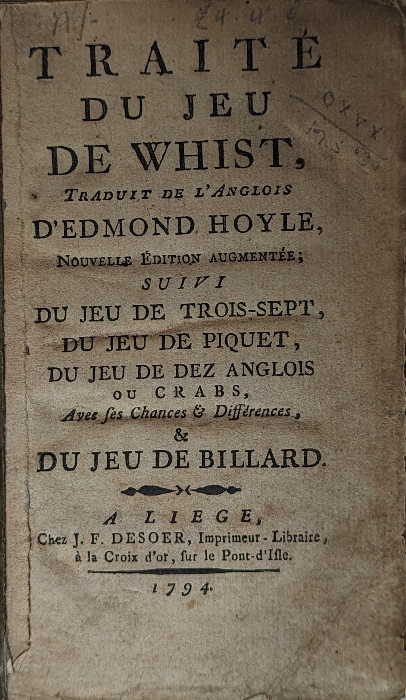

A Descriptive Bibliography of Edmond Hoyle
Copyright © 2014-26 by David Levy
(page updated 2026-03-24)User Guide
Desoer.Whist.Fr.1794
Traité du Jeu de Whist, Chez J. F. Desoer, nouvelle édition augmentée, 1794.
 |
Title: | TRAITÉ | DU JEU | DE WHIST, | Traduit de l'Anglois | D'EDMOND HOYLE, | Nouvelle Édition augmentée; | SUIVI | DU JEU DE TROIS-SEPT, | DU JEU DE PIQUET, | DU JEU DE DEZ ANGLOIS | OU CRABS, | Avec ſes Chances & Différences, | & | DU JEU DE BILLIARD. | [short decorative rule] | A LIEGE, | Chez J. F. DESOER, Imprimeur-Libraire, | à la Croix d'or, ſur le Pont-d'Iſle. | [short decorative rule] | 1794. |
| Collation: | 12o: A–G12 H10 [$½ signed]; 94 leaves, pp. [1–2] 3–186 [2 ] |
| Contents: | Signature (Page) Reference | Contents | Signature (Page) Reference | Running Titles |
| A1r (1) | title | |||
| A1v (2) | blank | |||
| A2r–A2v (3–4) | ‘[headpiece] | AVANT-PROPOS. | [...]’ | A2v (4) | ‘Avant-Propos.’ | |
| A3r–A4v (5–8) | ‘[decorative rule] | EXPLICATION | De quelque termes, ou mots techniques | employés dans ce Traité, à l'uſage des | Commençans. | [...]’ | A3v–A4v (6–8) | ‘Explication.’ | |
| A5r–D8v (9–88) | ‘[headpiece] | TRAITÉ | DU JEU | DE WHIST. | [...]’ | A5v–D9r (10–89) | ‘Traité | du Jeu de Whiſt.’ | |
| D9r–D9v (89–90) | ‘[decorative rule] | EXTRAIT | De l'Avant-Coureur, feuille hebdoma-|daire de Paris, en date du 29 Juil-|let 1765, No. 30, page 467. | [...]’ | D9v (90) | ‘Traité du Jeu de Whiſt.’ | |
| D10r–E5v (91–106) | ‘[decorative rule] | LE JEU | DU | TROIS-SEPT. | [...]’ | D10v–E5r (92–105) | ‘Le Jeu | de Trois-Sept.’ | |
| E5v (106) | ‘Le Jeu de Trois-Sept.’ | |||
| E6r–G4v (107–152) | ‘[decorative rule] | LE JEU | DE | PIQUET, | [...]’ | E6v (108) | ‘Avant-Propos.’ | |
| E7v–G4r (110–151) | ‘Le Jeu | de Piquet.’ | |||
| G4v (152) | ‘Le Jeu de Piquet.’ | |||
| G5r–G7v (153–158) | ‘[decorative rule] | LE JEU | DE | DEZ ANGLOIS. | [...]i’ | G5v–G7r (154–157) | ‘Le Jeu | de Dez Anglois.’ | |
| G7v (158) | ‘Le Jeu de Dez Anglois.’ | |||
| G8r–H7v (159–182) | ‘[decorative rule] | LE JEU | DE BILLIARD | AVEC SES REGLES. | [...]’ | G8v–H7r (160–181) | ‘Le Jeu | de Billiard.’ | |
| on H7r (181) | ‘ae Billiard.’ | |||
| H7v (182) | ‘Le Jeu de Billiard.’ | |||
| H8r–H9v (183–186) | ‘[decorative rule] | TABLE | DES PRINCIPAUX ARTICLES | Contenus dans ce Livre. | [...]’ | H8v–H9v (184–186) | ‘TABLE.’ | |
| H10r–H10v | blank |
| Publisher: | Chez J. F. Desoer |
| References: | Depaulis 137** |
| Copies Seen: | O [Jessel f.592]; TNJ [GV1277.H87f 1794]; Levy [1254] |
| Other Copies: | NNPM [E3 092 B 079421] |